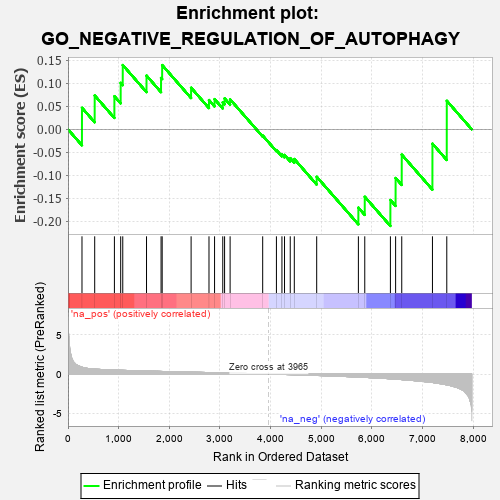
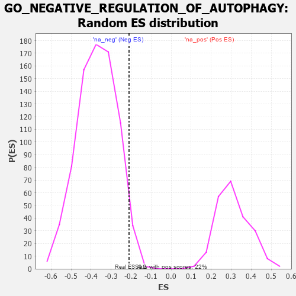

| | | Dataset | 7d |
| Phenotype | NoPhenotypeAvailable |
| Upregulated in class | na_neg |
| GeneSet | GO_NEGATIVE_REGULATION_OF_AUTOPHAGY |
| Enrichment Score (ES) | -0.21033995 |
| Normalized Enrichment Score (NES) | -0.5672892 |
| Nominal p-value | 0.966581 |
| FDR q-value | 1.0 |
| FWER p-Value | 1.0 |
Table: GSEA Results Summary

Fig 1: Enrichment plot: GO_NEGATIVE_REGULATION_OF_AUTOPHAGY
Profile of the Running ES Score & Positions of GeneSet Members on the Rank Ordered List
| PROBE | GENE SYMBOL | GENE_TITLE | RANK IN GENE LIST | RANK METRIC SCORE | RUNNING ES | CORE ENRICHMENT | | 1 | HGF | | | 276 | 0.870 | 0.0469 | No |
| 2 | HTRA2 | | | 527 | 0.621 | 0.0737 | No |
| 3 | WDR6 | | | 916 | 0.504 | 0.0721 | No |
| 4 | AKT1 | | | 1040 | 0.476 | 0.1013 | No |
| 5 | FOXK2 | | | 1081 | 0.467 | 0.1400 | No |
| 6 | QSOX1 | | | 1550 | 0.382 | 0.1170 | No |
| 7 | GATA4 | | | 1837 | 0.330 | 0.1120 | No |
| 8 | FOXK1 | | | 1859 | 0.326 | 0.1399 | No |
| 9 | MET | | | 2430 | 0.240 | 0.0907 | No |
| 10 | SCFD1 | | | 2783 | 0.185 | 0.0638 | No |
| 11 | MTM1 | | | 2893 | 0.168 | 0.0658 | No |
| 12 | FEZ1 | | | 3055 | 0.142 | 0.0588 | No |
| 13 | TIGAR | | | 3091 | 0.138 | 0.0674 | No |
| 14 | MTMR8 | | | 3200 | 0.122 | 0.0653 | No |
| 15 | SMG1 | | | 3843 | 0.021 | -0.0135 | No |
| 16 | MTOR | | | 4114 | -0.025 | -0.0452 | No |
| 17 | RRAGA | | | 4223 | -0.046 | -0.0545 | No |
| 18 | NRBP2 | | | 4274 | -0.055 | -0.0557 | No |
| 19 | MTMR9 | | | 4387 | -0.074 | -0.0628 | No |
| 20 | LRRK2 | | | 4467 | -0.087 | -0.0646 | No |
| 21 | TLK2 | | | 4909 | -0.179 | -0.1033 | No |
| 22 | DAP | | | 5732 | -0.386 | -0.1705 | Yes |
| 23 | ATG7 | | | 5858 | -0.420 | -0.1468 | Yes |
| 24 | NPC1 | | | 6364 | -0.602 | -0.1538 | Yes |
| 25 | HERC1 | | | 6467 | -0.647 | -0.1059 | Yes |
| 26 | RNF41 | | | 6588 | -0.703 | -0.0550 | Yes |
| 27 | TSPO | | | 7194 | -1.065 | -0.0312 | Yes |
| 28 | CPTP | | | 7477 | -1.373 | 0.0622 | Yes |
Table: GSEA details [plain text format]

Fig 2: GO_NEGATIVE_REGULATION_OF_AUTOPHAGY: Random ES distribution
Gene set null distribution of ES for GO_NEGATIVE_REGULATION_OF_AUTOPHAGY